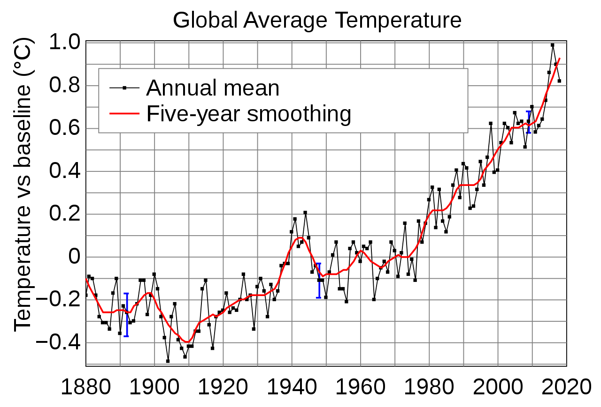
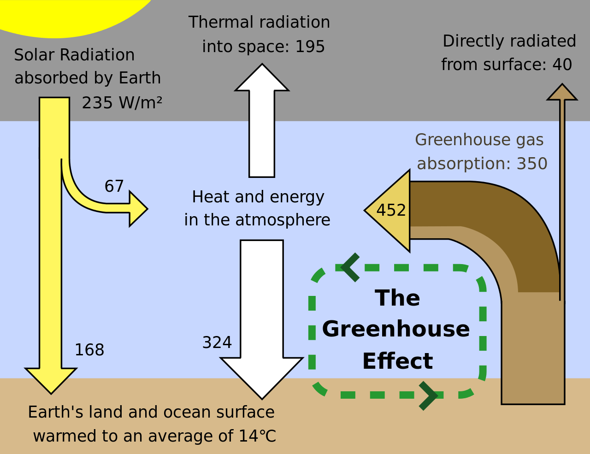
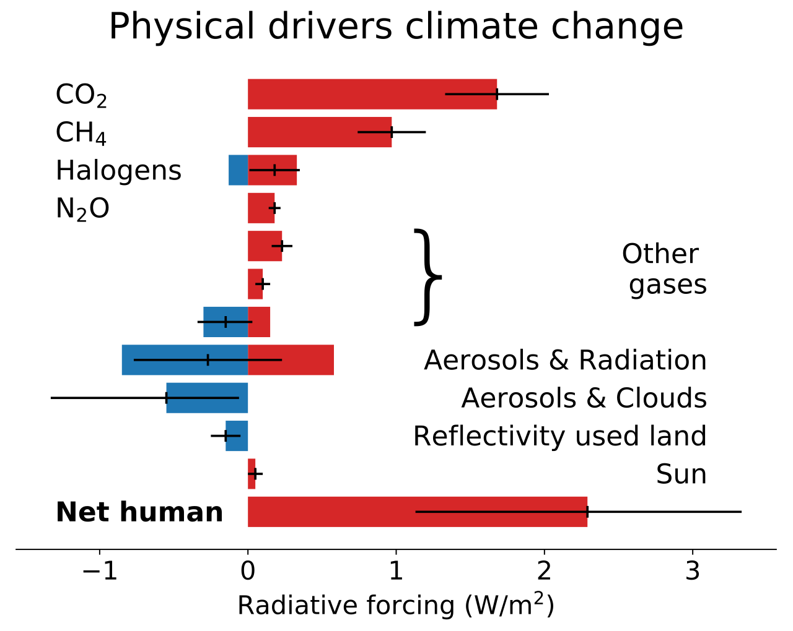
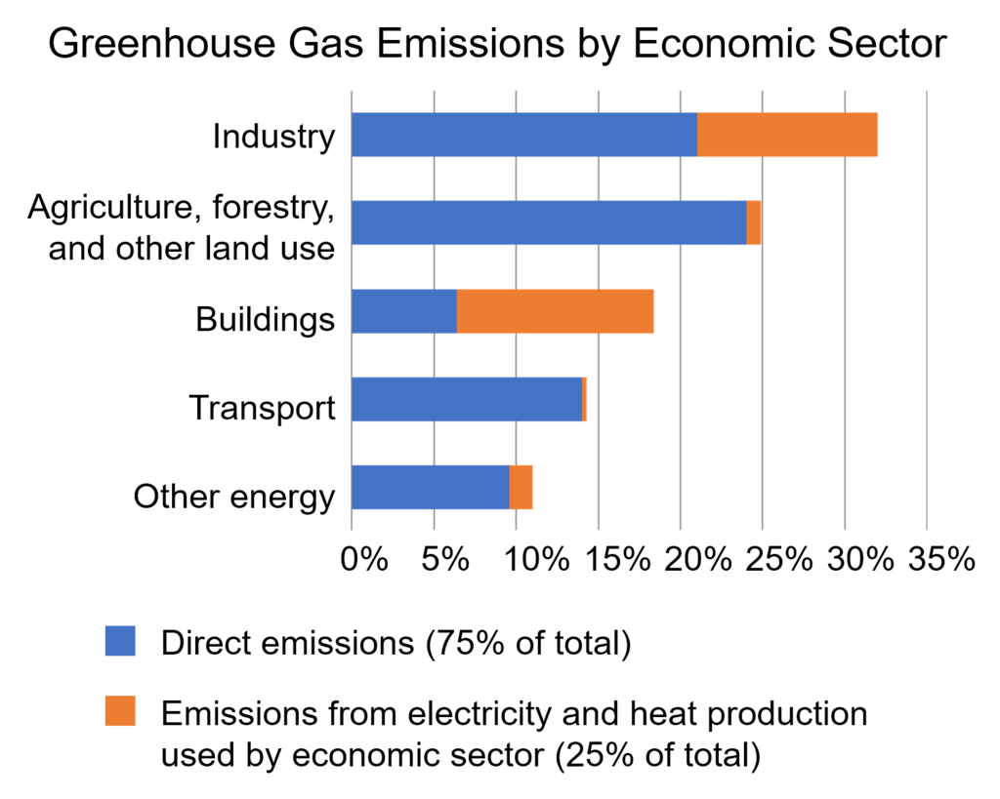
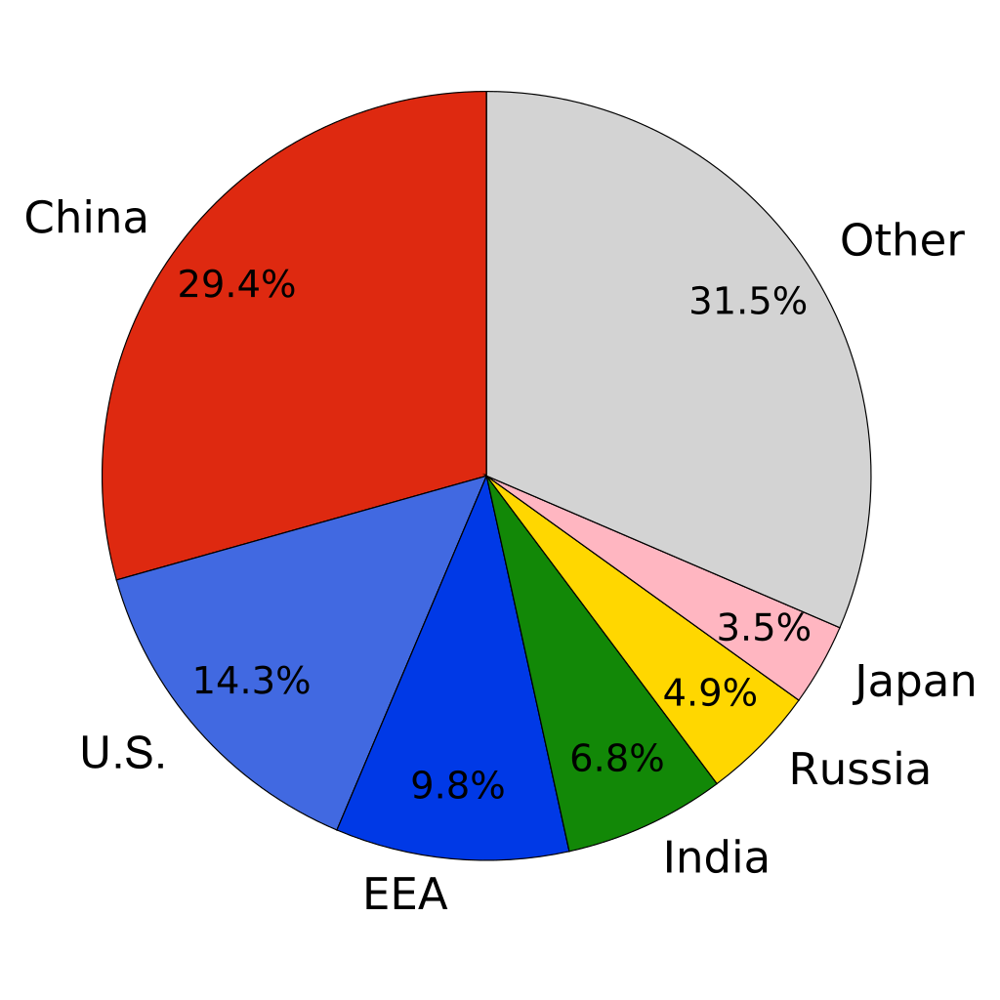
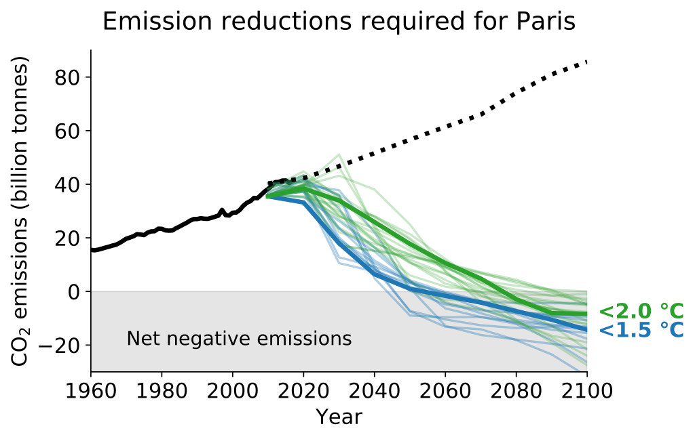

Global warming is the long-term rise in the average temperature of the Earth's climate system. It is a major aspect of climate change and has been demonstrated by direct temperature measurements and by measurements of various effects of the warming. Global warming and climate change are often used interchangeably. But more accurately, global warming is the mainly human-caused increase in global surface temperatures and its projected continuation, while climate change includes both global warming and its effects, such as changes in precipitation. While there have been prehistoric periods of global warming, many observed changes since the mid-20th century have been unprecedented over decades to millennia.
The Intergovernmental Panel on Climate Change (IPCC) Fifth Assessment Report concluded, "It is extremely likely that human influence has been the dominant cause of the observed warming since the mid-20th century". The largest human influence has been the emission of greenhouse gases such as carbon dioxide, methane, and nitrous oxide. Climate model projections summarized in the report indicated that, during the 21st century, the global surface temperature is likely to rise a further 0.3 to 1.7 °C (0.5 to 3.1 °F) in a moderate scenario, or as much as 2.6 to 4.8 °C (4.7 to 8.6 °F) in an extreme scenario, depending on the rate of future greenhouse gas emissions and on climate feedback effects.
These findings have been recognized by the national science academies of the major industrialized nations and are not disputed by any scientific body of national or international standing. The IPCC has stressed the need to keep global warming permanentely below 1.5°C compared to pre-industrial levels to avoid irreversible impacts. The remaining carbon budget for staying below 1.5°C with a twothirds chance would be exhausted in 2028 if emissions remained on the current level of 42 GtCO2 per year. The effects of global warming include rising sea levels, regional changes in precipitation, more frequent extreme weather events such as heat waves, and expansion of deserts. Ocean acidification is also caused by greenhouse gas emissions and is commonly grouped with these effects even though it is not driven by temperature. Surface temperature increases are greatest in the Arctic, which have contributed to the retreat of glaciers, permafrost, and sea ice. Overall, higher temperatures bring more rain and snowfall, but for some regions droughts and wildfires increase instead. Climate change threatens to diminish crop yields, harming food security, and rising sea levels may flood coastal infrastructure and force the abandonment of many coastal cities. Environmental impacts include the extinction or relocation of many species as their ecosystems change, most immediately in coral reefs, mountains, and the Arctic.
Societal responses to global warming include mitigation by emissions reduction, adaptation to its effects, and possibly climate engineering. Countries work together on climate change under the umbrella of the United Nations Framework Convention on Climate Change (UNFCCC), which entered into force in 1994 and has near-universal membership. The ultimate goal of the convention is to "prevent dangerous anthropogenic interference with the climate system". Although the parties to the UNFCCC have agreed that deep cuts in emissions are required and that global warming should be limited to well below 2 °C (3.6 °F) in the Paris Agreement of 2016, the Earth's average surface temperature has already increased by about half this threshold and current pledges by countries to cut emissions are inadequate to limit future warming.
Causes of global warming
By itself, the climate system experiences various cycles which can last for years (such as the El Niño–Southern Oscillation) to decades or centuries. Other changes are caused by external forcings. These forcings are "external" to the climate system, but not always external to the Earth. Examples of external forcings include changes in the composition of the atmosphere (e.g. increased concentrations of greenhouse gases), solar luminosity, volcanic eruptions, and variations in the Earth's orbit around the Sun. Attributing detected temperature changes and extreme events to human-caused increases in greenhouse gases requires scientists to rule out known internal climate variability and natural external forcings. Therefore, a key approach is to use physically or statistically based computer modelling of the climate system to determine unique fingerprints for all potential causes. By comparing these fingerprints with observed patterns and evolution of climate change, and the observed evolution of the forcings, the causes of the observed changes can be determined.Scientists have determined that the major factors causing the current climate change are greenhouse gases, land use changes, and aerosols and soot.
Greenhouse gases
Greenhouse gases trap heat radiating from the Earth to space. This heat, in the form of infrared radiation, gets absorbed and emitted by these gases in the atmosphere, thus warming the lower atmosphere and the surface. Before the Industrial Revolution, naturally occurring amounts of greenhouse gases caused the air near the surface to be warmer by about 33 °C (59 °F) than it would be in their absence. Without the Earth's atmosphere, the Earth's average temperature would be well below the freezing temperature of water. While water vapour (~50%) and clouds (~25%) are the biggest contributors to the greenhouse effect, they increase as a function of temperature and are therefore considered feedbacks. Increased concentrations of gases such as CO2 (~20%), ozone and N2O are external forcing on the other hand. Human activity since the Industrial Revolution has increased the amount of greenhouse gases in the atmosphere, leading to increased radiative forcing from CO2, methane, tropospheric ozone, CFCs, and nitrous oxide. As of 2011, the concentrations of CO2 and methane had increased by about 40% and 150%, respectively, since pre-industrial times. In 2013, CO2 readings taken at the world's primary benchmark site in Mauna Loa surpassing 400 ppm for the first time.
These levels are much higher than at any time during the last 800,000 years, the period for which reliable data have been collected from ice cores. Less direct geological evidence indicates that CO2 values have not been this high for millions of years.Global anthropogenic greenhouse gas emissions in 2010 were equivalent to 49 billion tonnes of carbon dioxide (using the most recent global warming potentials over 100 years from the AR5 report). Of these emissions, 65% was carbon dioxide from fossil fuel burning and industry, 11% was carbon dioxide from land use change, which is primarily due to deforestation, 16% was from methane, 6.2% was from nitrous oxide, and 2.0% was from fluorinated gases. Using life-cycle assessment to estimate emissions relating to final consumption, the dominant sources of 2010 emissions were: food (26–30% of emissions); washing, heating, and lighting (26%); personal transport and freight (20%); and building construction (15%). The 10th Emissions Gap Report issued by the United Nations Environment Programme (UNEP) predicts that if emissions continue to increase at the same rate as they have in 2010–2020, global temperatures would rise by as much as 4° by 2100.
Global warming potential (GWP) values relative to CO2
| # | Name | Second Assessment Report | Fourth Assessment Report | Fifth Assessment Report |
|---|---|---|---|---|
| 1 | CO2 | 1 | 1 | 1 |
| 2 | CH4 | 21 | 25 | 28 |
| 3 | N2O | 310 | 298 | 265 |
| 4 | CCl3F | 3800 | 4750 | 4660 |
| 5 | CCl2F2 | 8100 | 10900 | 10200 |
Land use change
Humans change the land surface mainly to create more agricultural land. Today agriculture takes up 50% of the world's habitable land, while 37% is forests, and that latter figure continues to decrease, largely due to continued forest loss in the tropics. This deforestation is the most significant aspect of land use change affecting global warming. The main causes are: deforestation through permanent land use change for agricultural products such as beef and palm oil (27%), forestry/forest products (26%), short term agricultural cultivation (24%), and wildfires (23%). Current patterns of land use affect global warming in a variety of ways. While some aspects cause significant GHG emissions, other land use processes act as a significant carbon sink for CO2, more than offsetting these GHG sources. The net result is an estimated removal (sink) of about 6 billion tonnes annually, or about 12% of global GHG emissions. The land acts as a carbon sink via carbon fixation in the soil and increased photosynthesis.
Effects of global warming
The environmental effects of global warming are broad and far-reaching. They include effects on the oceans, ice, and weather and may occur gradually or rapidly. Between 1993 and 2017, the global mean sea level rose on average by 3.1 ± 0.3 mm per year, with an acceleration detected as well. Over the 21st century, the IPCC projects that in a very high emissions scenario the sea level could rise by 61–110 cm. The rate of ice loss from glaciers and ice sheets in the Antarctic is a key area of uncertainty since this source could account for 90% of the potential sea level rise: increased ocean warmth is undermining and threatening to unplug Antarctic glacier outlets, potentially resulting in more rapid sea level rise. The retreat of non-polar glaciers also contributes to sea level rise.
Many regions have probably already seen increases in warm spells and heat waves, and it is virtually certain that these changes will continue over the 21st century. Since the 1950s, droughts and heat waves have appeared simultaneously with increasing frequency. Extremely wet or dry events within the monsoon period have increased in India and East Asia. Various mechanisms have been identified that might explain extreme weather in mid-latitudes from the rapidly warming Arctic, such as the jet stream becoming more erratic. The maximum rainfall and wind speed from hurricanes and typhoons are likely increasing.
Long-term effects of global warming: On the timescale of centuries to millennia, the magnitude of global warming will be determined primarily by anthropogenic CO2 emissions. This is due to carbon dioxide's very long lifetime in the atmosphere. The emissions are estimated to have prolonged the current interglacial period by at least 100,000 years. Because the great mass of glaciers and ice caps depressed the Earth's crust, another long-term effect of ice melt and deglaciation is the gradual rising of landmasses, a process called post-glacial rebound. This could be facilitating seismic and volcanic activity in places like Iceland. Tsunamis could be generated by submarine landslides caused by warmer ocean water thawing ocean-floor permafrost or releasing gas hydrates. Sea level rise will continue over many centuries. Abrupt climate change, tipping points in the climate system: Climate change could result in global, large-scale changes. Some large-scale changes could occur abruptly, i.e. over a short time period, and might also be irreversible. One potential source of abrupt climate change would be the rapid release of methane and carbon dioxide from permafrost, which would amplify global warming. Another example is the possibility for the Atlantic Meridional Overturning Circulation to slow or shut down (see also shutdown of thermohaline circulation). This could trigger cooling in the North Atlantic, Europe, and North America.
Climate change feedback
The response of the climate system to an initial forcing is increased by self-reinforcing feedbacks and reduced by balancing feedbacks. The main balancing feedback to global temperature change is radiative cooling to space as infrared radiation, which increases strongly with increasing temperature. The main reinforcing feedbacks are the water vapour feedback, the ice–albedo feedback, and probably the net effect of clouds. Uncertainty over feedbacks is the major reason why different climate models project different magnitudes of warming for a given amount of emissions. As air gets warmer, it can hold more moisture. After an initial warming due to emissions of greenhouse gases, the atmosphere will hold more water. As water is a potent greenhouse gas, this further heats the climate: the water vapour feedback. The reduction of snow cover and sea ice in the Arctic reduces the albedo of the Earth's surface.
More of the Sun's energy is now absorbed in these regions, contributing to Arctic amplification, which has caused Arctic temperatures to increase at more than twice the rate of the rest of the world. Arctic amplification also causes methane to be released as permafrost melts, which is expected to surpass land use changes as the second strongest anthropogenic source of greenhouse gases by the end of the century. Cloud cover may change in the future. If cloud cover increases, more sunlight will be reflected back into space, cooling the planet. Simultaneously, the clouds enhance the greenhouse effect, warming the planet. The opposite is true if cloud cover decreases. It depends on the cloud type and location which process is more important. Overall, the net feedback over the industrial era has probably been self-reinforcing. Roughly half of each year's CO2 emissions have been absorbed by plants on land and in oceans. Carbon dioxide and an extended growing season have stimulated plant growth making the land carbon cycle a balancing feedback. Climate change also increases droughts and heat waves that inhibit plant growth, which makes it uncertain whether this balancing feedback will persist in the future. Soils contain large quantities of carbon and may release some when they heat up. As more CO2 and heat are absorbed by the ocean, it is acidifying and ocean circulation can change, changing the rate at which the ocean can absorb atmospheric carbon. A concern is that self-reinforcing feedbacks will lead to a tipping point, where global temperatures transition to a hothouse climate state even if greenhouse gas emissions are reduced or eliminated.A 2018 study tried to identify such a planetary threshold for self-reinforcing feedbacks and found that even a 2 °C (3.6 °F) increase in temperature over pre-industrial levels may be enough to trigger such a hothouse Earth scenario.
Climate change projections
A climate model is a representation of the physical, chemical, and biological processes that affect the climate system. Computer models are run on supercomputers to reproduce and predict the circulation of the oceans, the annual cycle of the seasons, and the flows of carbon between the land surface and the atmosphere. There are more than two dozen scientific institutions that develop climate models. Models not only project different future temperature with different emissions of greenhouse gases, but also do not fully agree on the strength of different feedbacks on climate sensitivity and the amount of inertia of the system. A subset of climate models add societal factors to a simple physical climate model. These models simulate how population, economic growth, and energy use affect – and interact with – the physical climate. With this information, scientists can produce scenarios of how greenhouse gas emissions may vary in the future. Scientists can then run these scenarios through physical climate models to generate climate change projections.
Climate models include different external forcings for their models. For different greenhouse gas inputs four RCPs (Representative Concentration Pathways) are used: "a stringent mitigation scenario (RCP2.6), two intermediate scenarios (RCP4.5 and RCP6.0) and one scenario with very high GHG [greenhouse gas] emissions (RCP8.5)". Models also include changes in the Earth's orbit, historical changes in the Sun's activity, and volcanic forcing. RCPs only look at concentrations of greenhouse gases, factoring out uncertainty as to whether the carbon cycle will continue to remove about half of the carbon dioxide from the atmosphere each year. The physical realism of models is tested by examining their ability to simulate contemporary or past climates. Past models have underestimated the rate of Arctic shrinkage and underestimated the rate of precipitation increase. Sea level rise since 1990 was underestimated in older models, but now agrees well with observations. The 2017 United States-published National Climate Assessment notes that "climate models may still be underestimating or missing relevant feedback processes".
Climate change responses
Mitigation of and adaptation to climate change are two complementary responses to global warming. Successful adaptation is easier if there are substantial emission reductions. Many of the countries that have contributed least to global greenhouse gas emissions are among the most vulnerable to climate change, which raises questions about justice and fairness with regard to mitigation and adaptation.
Mitigation
Climate change can be mitigated through the reduction of greenhouse gas emissions or the enhancement of the capacity of carbon sinks to absorb greenhouse gases from the atmosphere. There is a large potential for future reductions in emissions by a combination of activities, including energy conservation and increased energy efficiency; the use of low-carbon energy technologies, such as renewable energy, nuclear energy, and carbon capture and storage; decarbonizing buildings and transport; and enhancing carbon sinks through, for example, reforestation and preventing deforestation. A 2015 report by Citibank concluded that transitioning to a low-carbon economy would yield a positive return on investments.
Drivers of greenhouse gas emissions
Over the last three decades of the twentieth century, gross domestic product per capita and population growth were the main drivers of increases in greenhouse gas emissions. CO2 emissions are continuing to rise due to the burning of fossil fuels and land-use change. Emissions can be attributed to different regions. The attribution of emissions from land-use change is subject to considerable uncertainty.
Emissions scenarios, estimates of changes in future emission levels of greenhouse gases, depend upon uncertain economic, sociological, technological, and natural developments. In some scenarios emissions continue to rise over the century, while others have reduced emissions. Fossil fuel reserves are abundant, and will not limit carbon emissions in the 21st century. Emission scenarios can be combined with modelling of the carbon cycle to predict how atmospheric concentrations of greenhouse gases might change in the future. According to these combined models, by 2100 the atmospheric concentration of CO2 could be as low as 380 or as high as 1400 ppm, depending on the Shared Socioeconomic Pathway (SSP) the world takes and the mitigation scenario.
Reducing greenhouse gases
Near- and long-term trends in the global energy system are inconsistent with limiting global warming to below 1.5 or 2 °C relative to pre-industrial levels. Current pledges made as part of the Paris Agreement would lead to about 3.0 °C of warming at the end of the 21st century, relative to pre-industrial levels. To keep warming below 2 °C, more stringent emission reductions in the near-term would allow for less rapid reductions after 2030. To keep warming under 1.5 °C, a far-reaching system change on an unprecedented scale is necessary in energy, land, cities, transport, buildings, and industry. A report, published just before the 2019 UN Climate Action Summit, says that the full implementation of all pledges taken by international coalitions, countries, cities, regions and businesses (not only in the Paris Agreement) would be sufficient to limit temperature rise to 2 °C but not to 1.5 °C. All the information about the pledges is added to the UNFCCC Global Climate Action portal. The scientific community is checking their fulfilment.
Co-benefits of climate change mitigation may help society and individuals more quickly. For example, bicycling reduces greenhouse gas emissions while reducing the effects of a sedentary lifestyle at the same time. The development and scaling-up of clean technology, such as cement that produces less CO2, is critical to achieve sufficient emission reductions for the Paris agreement goals. Many integrated models are unable to meet the 2 °C target if pessimistic assumptions are made about the availability of mitigation technologies.
It has been suggested that the most effective and comprehensive policy to reduce carbon emissions is a carbon tax or the closely related emissions trading. Individual action on climate change to reduce a person's carbon footprint include: limiting overconsumption, living car-free, forgoing air travel and adopting a plant-based diet.
{kind=link}
{kind=link}
{kind=link}
{kind=link}
{kind=link}
{kind=link}
{kind=link}
{kind=link}
{kind=link}
{kind=link}
{kind=link}
Video gallery
Contact us
Email Us
info@rvt.lv
contact@rvt.lv
Call Us
+37128218443
+37128975643